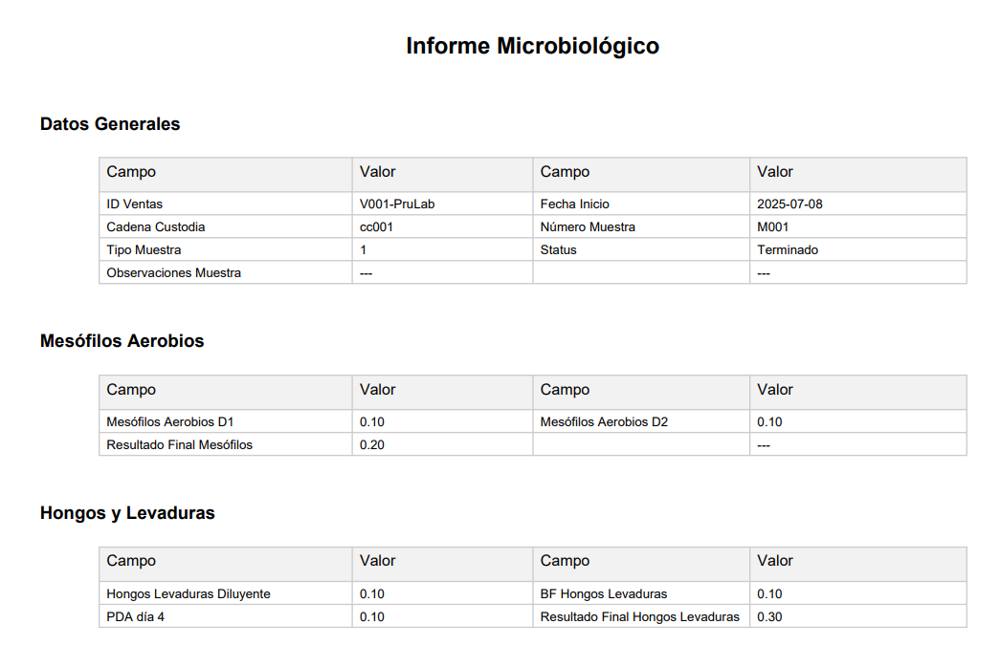

Funcionalidades Principales
- ✅ Login y navegación por rol
- ✅ Formularios por laboratorio (microbiología, fisicoquímica, etc.)
- ✅ Reportes PDF horizontales
- ✅ Flujo de revisión con comentarios
informe_micro.png
Ejemplo de informe generado
Moderniza tu laboratorio
Porque el futuro del análisis... ya comenzó.